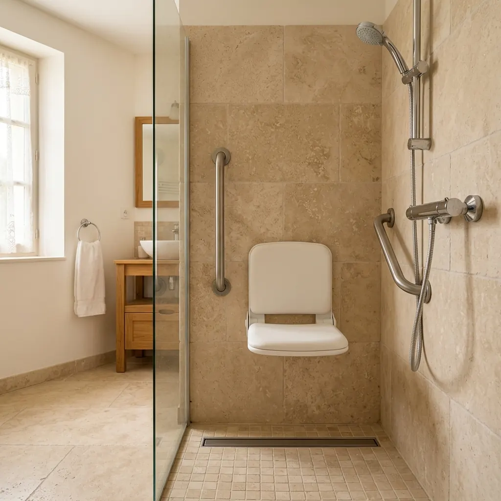

À retenir — quatre familles d’équipements
- 1.Entrer plus facilement — receveur bas, barre à l’entrée, accès dégagé.
- 2.Se maintenir et s’asseoir — barres sur renforts, siège stable.
- 3.Utiliser l’eau et les commandes — douchette réglable, mitigeur thermostatique.
- 4.Voir, ranger, entretenir — éclairage sans ombre, rangement à hauteur, surfaces faciles.
Avant d’acheter : observer l’usage réel de la douche
Le bon équipement répond à un geste précis. Prenez cinq minutes pour observer — ou faire décrire — une douche type : faut-il enjamber quelque chose ? La station debout est-elle tenable toute la durée ? Comment entre-t-on : seul, avec une canne, un déambulateur ? Les commandes sont-elles atteignables sans se pencher ? Le sol devient-il glissant, l’eau stagne-t-elle ? Les produits sont-ils posés au sol ou en hauteur ? Un proche intervient-il ?
Ces réponses dessinent votre liste. Si l’entrée elle-même est l’obstacle principal (seuil de baignoire, cabine étroite), les équipements ne suffiront pas : voyez d’abord le remplacement de baignoire ou le choix du bon niveau d’adaptation.
Entrer plus facilement
Trois leviers, du plus léger au plus lourd : une barre verticale à l’entrée, qui sécurise le franchissement d’un seuil existant sans travaux lourds ; un accès dégagé — rideau ou porte coulissante à la place d’une porte battante qui bloque le passage ; et le receveur lui-même — extra-plat ou plain-pied, qui relève alors de la rénovation (le plain-pied n’est pas réalisable partout : l’évacuation doit pouvoir s’encastrer dans le sol).
Les barres d’appui : au bon endroit, sur le bon support
Chaque forme sert un geste : verticale à l’entrée pour franchir et se stabiliser debout ; horizontale ou coudée le long du mur pour se tenir pendant la douche et accompagner l’assise ; relevable à côté d’un siège pour le transfert, quand un appui des deux côtés est utile. Un contraste de couleur avec le mur aide à les repérer d’un coup d’œil, et un diamètre adapté à la main assure la prise.
Le point décisif est invisible : la fixation. Une barre d’appui reprend le poids du corps ; elle se fixe dans un support sain, idéalement renforcé (renforts posés derrière le revêtement lors des travaux). C’est pourquoi le positionnement se décide sur place, selon le mouvement réel de la personne — pas sur catalogue.
Deux confusions à éviter — un porte-serviette n’est pas une barre d’appui : il n’est pas conçu pour supporter un poids. Et une barre à ventouse, utile en dépannage ponctuel sur surface lisse, ne remplace pas une barre fixée structurellement pour un usage quotidien.
Le siège de douche : stable, à la bonne hauteur
Critères communs : stabilité, hauteur d’assise adaptée au transfert de la personne, capacité de charge annoncée par le fabricant, dossier et accoudoirs si le maintien du tronc est fragile, surfaces faciles à nettoyer — et l’accès aux commandes et à la douchette depuis la position assise, souvent oublié.
Douchette et mitigeur : l’eau sous contrôle
- ·La douchette à main — sur barre de réglage en hauteur, avec un flexible assez long pour l’usage assis et l’aide d’un proche ; support atteignable depuis le siège, poignée facile à tenir mains mouillées.
- ·Le mitigeur thermostatique — température réglée une fois pour toutes, levier maniable sans force ni torsion du poignet, repérage clair du chaud et du froid. La plupart des modèles limitent la température selon leur réglage — un vrai confort, qui réduit le risque de brûlure sans le supprimer totalement.
- ·La position des commandes — accessibles dès l’entrée (ouvrir l’eau avant d’être dessous) et depuis le siège, sans se lever ni se pencher.
Sol, éclairage, rangement : le trio discret qui change tout
- ·Le sol — privilégiez un receveur et des surfaces résistantes à la glissance (surfaces texturées, classées par les fabricants) ; aucun revêtement n’est « antidérapant garanti ». Le compromis se joue entre adhérence, confort pieds nus et facilité de nettoyage — les textures très agressives retiennent les résidus. Et le meilleur sol ne compense pas une eau qui stagne : le drainage compte autant.
- ·L’éclairage — un éclairage général suffisant, complété si besoin dans la zone de douche, sans ombre portée sur les commandes ni éblouissement ; un cheminement nocturne éclairé vers la salle de bain rend service toute l’année. L’installation électrique en zone humide relève d’un professionnel.
- ·Le rangement — niche ou étagère à hauteur de main, atteignable assis, pour ne rien poser au sol ; un distributeur mural évite les flacons glissants qui finissent par terre.
Paroi, porte ou rideau ?
Le rideau : accès totalement libre, idéal quand un proche aide, coût minimal — mais contient moins bien les projections. La paroi fixe : élégante et facile à nettoyer, elle laisse un large passage. La porte coulissante : contient bien l’eau sans débattement dans la pièce ; son rail bas se nettoie régulièrement. La porte battante : à réserver aux pièces où son débattement ne gêne ni l’accès ni la circulation. Le choix se fait avec l’implantation du siège et le sens d’approche de la personne.
Prioriser le budget — et savoir quand aller plus loin
Entrée praticable, barres sur renforts, siège stable, sol à glissance réduite, commandes accessibles. C’est le socle — souvent 500 à 2 000 € posés sur une douche existante.
Douchette sur barre, mitigeur thermostatique, éclairage complété, rangement à hauteur, paroi mieux adaptée.
Renforts posés d’avance pour de futures barres, espace préservé pour un transfert, choix évolutifs — le moins cher des investissements quand des travaux sont déjà ouverts.
Si l’entrée reste difficile malgré les équipements, si plusieurs zones posent problème, ou si un fauteuil ou une aide humaine entre en jeu, l’adaptation dépasse l’accessoire : étudiez le remplacement de l’installation ou une adaptation plus large de la salle de bain. MaPrimeAdapt’ peut couvrir ces équipements lorsqu’ils s’inscrivent dans un projet d’adaptation éligible — voir les conditions.
Questions à poser au professionnel : où seront posés les renforts ? Quel siège pour ma configuration et mon transfert ? Les commandes seront-elles accessibles assis ? Quel ressaut restera-t-il à l’entrée ? Comment l’eau sera-t-elle contenue et évacuée ? Les équipements figurent-ils tous, ligne par ligne, dans le devis ?
Définir les équipements utiles pour votre douche
Décrivez votre douche actuelle, les difficultés rencontrées et votre code postal pour vérifier les solutions disponibles dans votre secteur. Gratuit et sans engagement.
Questions fréquentes
Quels sont les équipements les plus utiles dans une douche senior ?
Le socle : barres d’appui sur renforts, siège stable, sol à glissance réduite, mitigeur thermostatique et douchette accessible. Le bon ensemble dépend des gestes réels de la personne — entrée, maintien, transfert.
Où installer les barres d’appui ?
Une verticale à l’entrée pour franchir, une horizontale ou coudée près du siège pour s’asseoir et se relever, éventuellement une relevable pour le transfert. Le positionnement exact se règle sur place, selon le mouvement de la personne.
Une barre à ventouse peut-elle remplacer une barre fixée ?
Non pour un usage quotidien : la ventouse dépend de la surface et peut se décoller. Elle dépanne ponctuellement (voyage, location courte), mais l’appui de tous les jours se fixe dans un support renforcé.
Quel siège de douche choisir ?
Siège mural rabattable sur renforts pour un usage durable ; chaise ou tabouret pour un besoin léger ou transitoire ; banc de transfert pour franchir un rebord de baignoire assis. Vérifiez stabilité, hauteur, capacité de charge et accès aux commandes une fois assis.
Peut-on ajouter un siège dans une douche existante ?
Oui : une chaise de douche se pose sans travaux ; un siège mural exige un mur porteur sain ou renforcé — un professionnel le vérifie et pose les renforts si besoin derrière le revêtement.
Quel sol choisir pour limiter la glissance ?
Un receveur ou carrelage à surface texturée, classé pour la glissance par le fabricant — en acceptant le compromis avec le nettoyage. Aucune surface n’est « antidérapante garantie », et un bon drainage (pas d’eau stagnante) compte autant que la texture.
Un mitigeur thermostatique est-il indispensable ?
C’est l’un des meilleurs rapports utilité/prix : température stable, réglage sans tâtonner, limitation du très chaud selon le réglage du modèle. Il réduit nettement le risque de brûlure sans dispenser de prudence.
Peut-on sécuriser une douche sans la remplacer ?
Oui, si l’entrée est déjà praticable : barres, siège, douchette, mitigeur et sol adapté se posent sur l’existant (500 – 2 000 € posés en repère). Si le seuil ou l’espace restent l’obstacle, le remplacement de l’installation devient le vrai sujet.
MaPrimeAdapt’ peut-elle financer ces équipements ?
Oui lorsqu’ils s’inscrivent dans un projet d’adaptation éligible réalisé par un professionnel, sous conditions de situation et de ressources — accords à obtenir avant travaux. Voir les conditions.